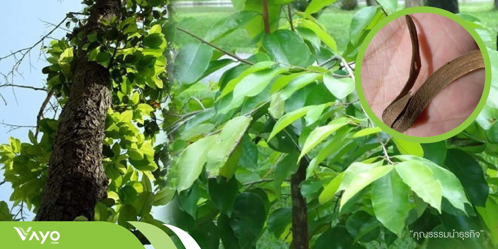

ต้นเคี่ยม

ต้นเคี่ยมเป็นไม้เนื้อแข็ง สูงประมาณ 30–50 เมตร ลำต้นตรง เปลือกสีน้ำตาลเข้มหรือเทา เนื้อไม้แข็ง เหนียว และทนทานมาก ใบเป็นใบเดี่ยว รูปรี สีเขียวเข้ม ดอกมีขนาดเล็ก สีขาวหรือเหลืองอ่อน ออกเป็นช่อ ส่วนผลมีลักษณะกลมรี